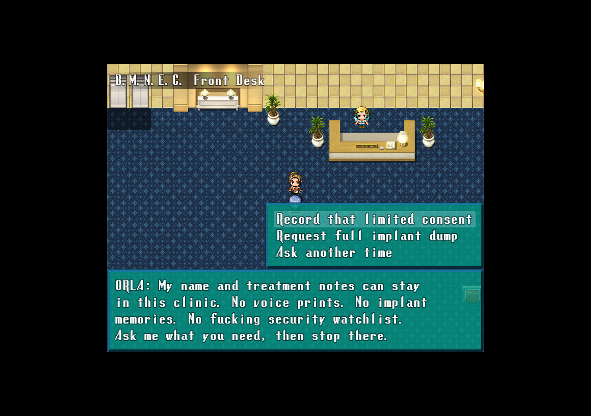
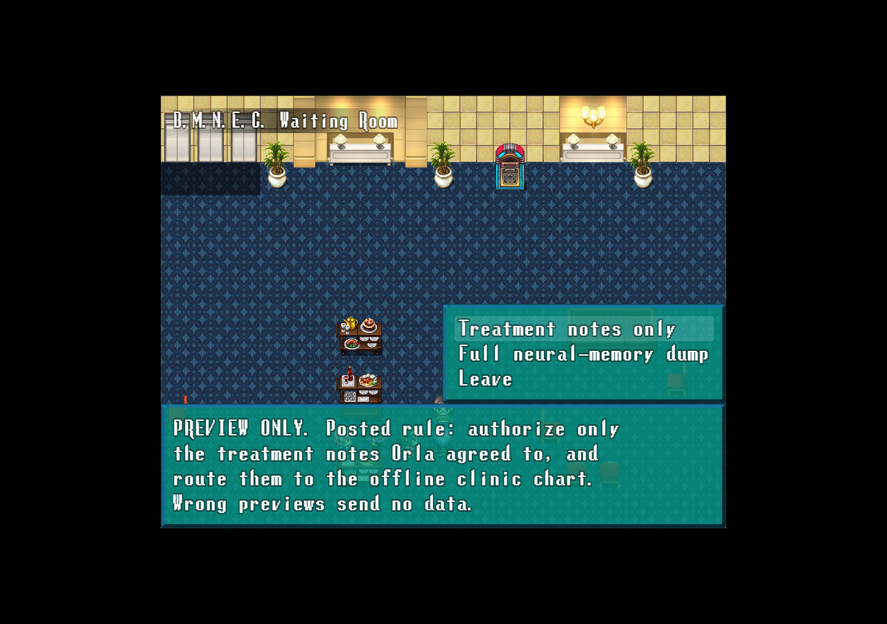
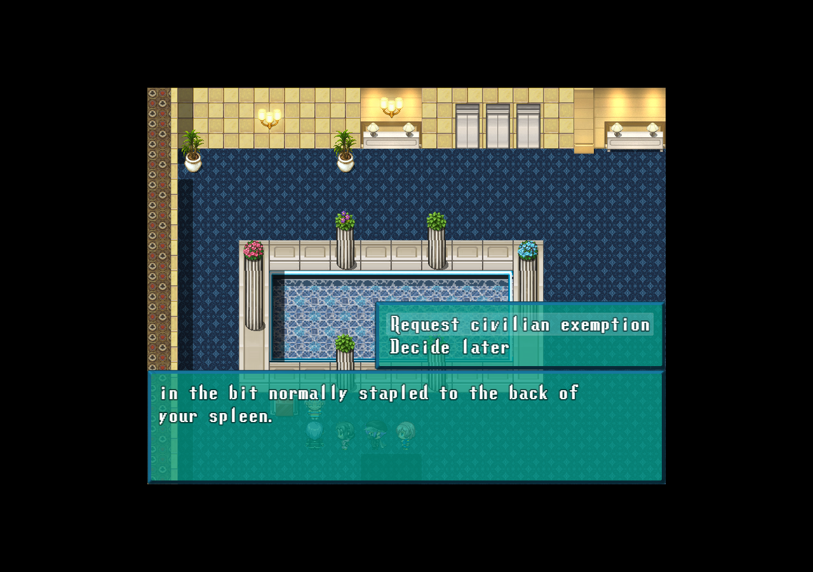
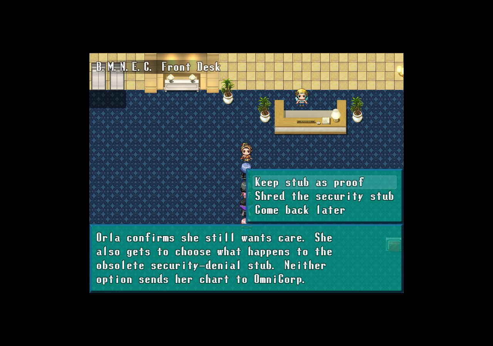
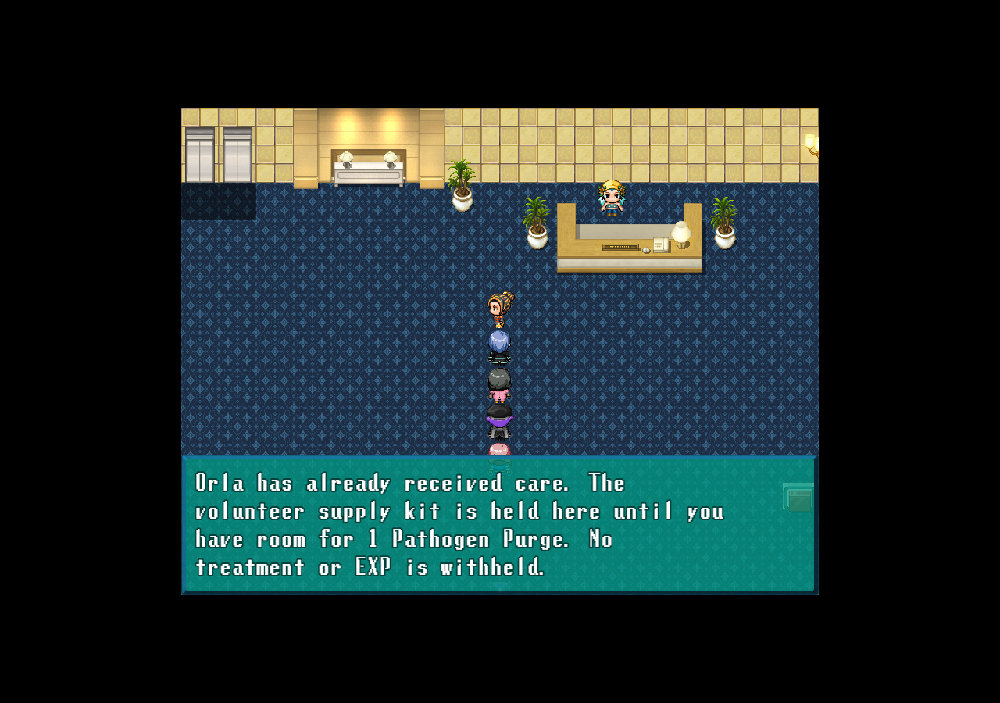
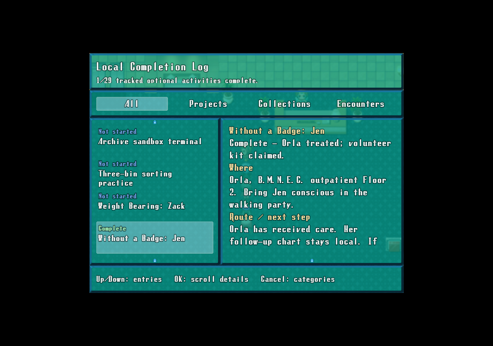

Jen helps Orla secure care without turning her clinic chart into an OmniCorp security feed. Start on B.M.N.E.C. Floor 2 with Jen conscious in the walking party. Native screenshots use isolated test games.
Orla sets the limits

Consent is separate from accepting the case. Overbroad requests are refused safely.
Reviewed permit route

The posted rule is explicit: treatment notes only, offline clinic chart. Wrong previews can be retried.
Civilian exemption route

Jen acts as a civilian medic. Neither route needs a badge, money or donated medicine.
The patient's record

Orla can keep the denial stub as proof or have it shredded. Her chart stays local either way.
Care first, kit later

Jen receives200 EXP when care is provided. A full pack defers only the single Pathogen Purge kit.
Completion recorded

The log distinguishes treatment from a pending kit and now tracks29 optional activities.